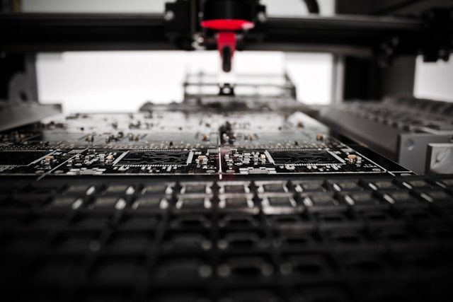
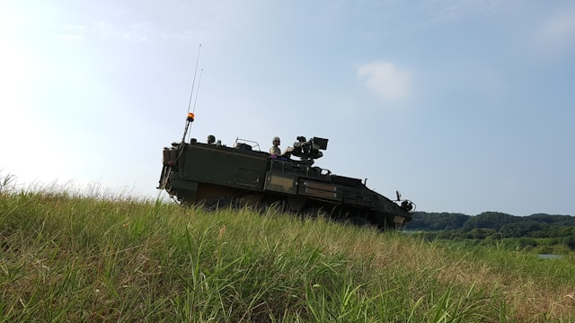

C1 project concluded
The long awaited C1 project has now been officially concluded.

Manufacturers Wanted!
More manufactoring jobs are now avalible for hire. Apply now!

APC-R8 revealed
The Armored Personell Carrier-Robotic 8 has been officially revealed and is now in testing.